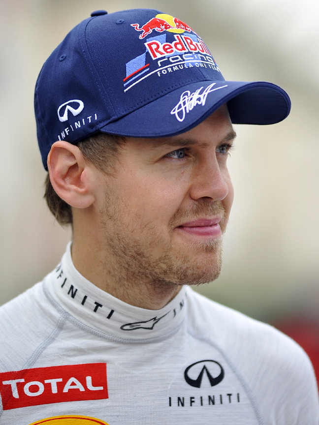

SINTESI DELLA STAGIONE 2012 - IL TRIONFO DI SEBASTIAN VETTEL
Era V8 Aspirati • 20 Gran Premi disputati

Il Mondiale 2012 è unanimemente considerato uno dei capolavori del motorsport per equilibrio, qualità della griglia di partenza (con ben sei campioni del mondo in pista) e tensione agonistica fino all'ultimo giro. La tenacia disumana di Fernando Alonso con una Ferrari tecnicamente inferiore ha sfidato la Red Bull di Vettel in un testa a testa leggendario conclusosi con tre miseri punti di scarto.
🏆 Campione del Mondo Piloti: Sebastian Vettel (Red Bull Racing) - 281 pt
🥈 Secondo classificato: Fernando Alonso (278 pt)
🏁 Scuderia Campione Costruttori: Red Bull Racing
🏎️ Numero Gran Premi: 20
LA MIGLIOR GARA DELL'ANNO: GRAN PREMIO DEL BRASILE (INTERLAGOS)
Circuito: Autódromo José Carlos Pace (Interlagos)
Considerata una delle gare più belle e drammatiche di sempre. Con sette vincitori diversi nelle prime sette gare, il mondiale si decide sul bagnato a San Paolo: Vettel viene colpito da Bruno Senna alla curva 4 del 1° giro, finendo in testacoda, con lo scarico squarciato e ultimo in classifica, mentre Alonso è virtualmente campione su Ferrari. Con una rimonta furiosa sotto la pioggia e un pit stop imprevisto con radio rotta, Vettel risale fino al 6° posto vincendo il suo 3° titolo per soli 3 punti.
IL SORPASSO PIÙ SPETTACOLARE & DUELLO DELL'ANNO
La rimonta a raffica di Vettel a Interlagos e Raikkonen ad Abu Dhabi
Mentre Alonso dava tutto con la Ferrari F2012, Vettel ha rimontato a Interlagos superando Kobayashi, Vergne e Schumacher con manovre da cuore in gola sull'asfalto viscido. Altrettanto celebre la vittoria di Kimi Räikkönen ad Abu Dhabi con la Lotus, celebre per il team radio: 'Leave me alone, I know what I'm doing'.